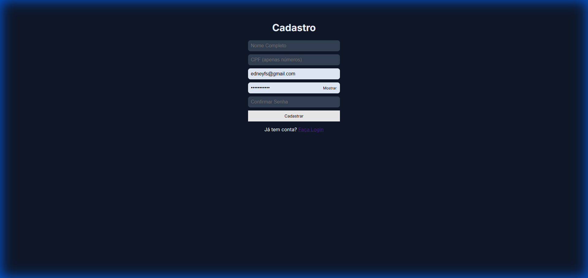
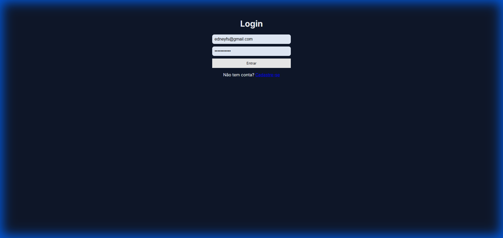
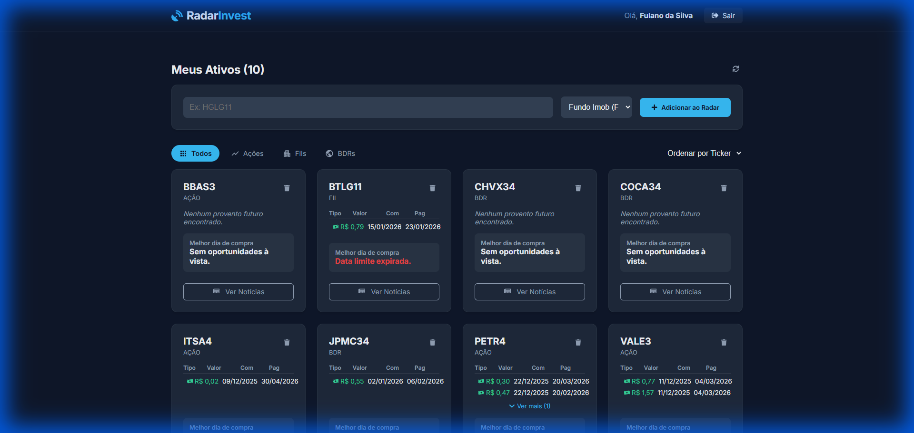
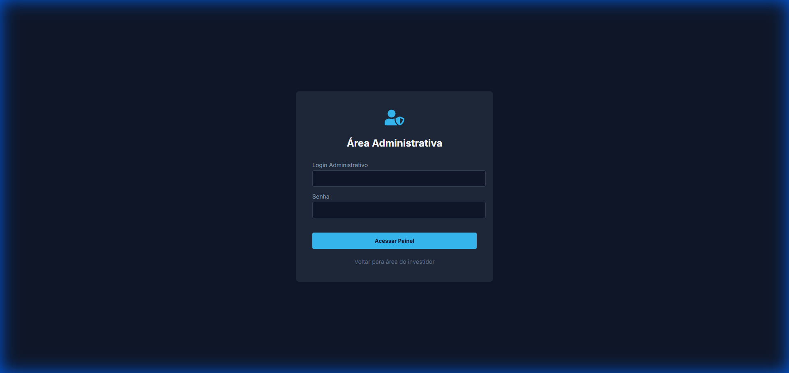

1. Criando sua Conta
Para começar a usar o RadarInvest, você precisa criar uma conta. A tela de cadastro é simples e segura.

Campos Obrigatórios:
- Nome Completo: Seu nome para identificação no sistema.
- CPF: Cadastro de Pessoa Física válido (somente números). O sistema valida se o CPF é real.
- Email: Seu endereço de email principal. Será usado para login.
- Senha: Deve ser uma senha forte.
Requisitos: Mínimo 8 caracteres, pelo menos uma letra maiúscula, uma minúscula e um caractere especial (ex: @, #, $).
- Confirmar Senha: Digite a mesma senha novamente para evitar erros de digitação.
2. Acessando o Sistema (Login)
Após se cadastrar, você será redirecionado para a tela de login.

Como acessar:
- Email: Digite o email cadastrado.
- Senha: Digite sua senha criada.
Se as credenciais estiverem corretas, você será levado ao seu Dashboard pessoal.
3. Gerenciando seus Ativos (Dashboard)
O Dashboard é a tela principal onde você monitora seus investimentos. Aqui você pode adicionar novos ativos ao seu "radar" e ver notícias relacionadas.

Funcionalidades:
3.1. Adicionar Novo Ativo
No topo da tela, você encontra o formulário para adicionar ativos:
- Ticker (Código): O código do ativo na bolsa (ex:
PETR4, MXRF11).
- Tipo: Selecione se é uma
Ação, Fundo Imobiliário (FII) ou BDR.
- Botão Adicionar: Clique para incluir o ativo na sua lista de monitoramento.
3.2. Meus Ativos (Lista)
Os ativos adicionados aparecem em cards. Cada card mostra:
- Código e Tipo: Identificação do ativo.
- Botão Notícias: Abre um modal com as últimas notícias relevantes sobre aquele ativo.
- Ícone Lixeira: Remove o ativo do seu radar.
4. Área Administrativa
O sistema possui um painel exclusivo para administradores visualizarem métricas de uso.

Acesso Restrito:
- Este painel é acessível apenas para usuários com perfil ADMIN.
- O login é feito em uma URL separada (
/admin).
- O painel exibe:
- Total de usuários cadastrados.
- Usuários online no momento.
- Total de ativos (tickers) sendo monitorados no sistema.